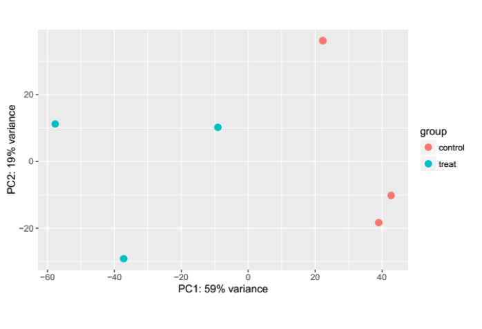

通过回贴定位到基因区域的Reads数目来估计相应基因的表达水平。Reads数目的多少直接反应了基因的表达量，因此直接统计基因上回贴到的Reads数是目前最为常用的评估基因表达水平的方法。
表4 基因表达水平统计样表
| Gene Symbol | Treat1 | Treat2 | Treat3 | Control1 | Control2 | Control3 |
|---|---|---|---|---|---|---|
| A1BG | 3 | 1 | 8 | 4 | 8 | 9 |
| A1BG-AS1 | 0 | 0 | 0 | 0 | 0 | 0 |
| A1CF | 589 | 538 | 460 | 625 | 474 | 509 |
| A2M | 1 | 0 | 2 | 3 | 0 | 6 |
| A2M-AS1 | 5 | 4 | 7 | 2 | 6 | 2 |
| A2ML1 | 1 | 0 | 0 | 1 | 0 | 0 |
| A2MP1 | 0 | 0 | 0 | 0 | 0 | 0 |
| A3GALT2 | 0 | 0 | 0 | 0 | 0 | 0 |
| A4GALT | 527 | 560 | 527 | 513 | 594 | 649 |
| A4GNT | 0 | 3 | 0 | 2 | 0 | 2 |
| … | … | … | … | … | … | … |
图3.5.4 样本基因相关性分析
当样本数目较多时，根据各样本所有基因的表达水平(read counts)，我们可以对样品进行主成分分析(Principal Component Analysis，PCA)。主成分分析是一种将多个变量通过线性变换以选出较少个数重要变量的多元统计分析方法，它通过降维的手段将大量影响表达模式的基因变换成少数几个主成分，尽可能多地保留原始变量的信息，且彼此间互不相关，将这几个主成分作线性组合，作为新的综合指标来对样品进行聚类分析，具体结果如图3.5.5所示
图3.5.5 样本表达水平的PCA聚类图
在得到基因表达值以后，差异基因筛选是整个RNA-seq分析的关键一步。现在科研领域中针对RNA-seq数据差异基因筛选的软件非常多，如edgeR，limma，或者DEseq等等。选择什么样的软件和参数都会对结果产生相当大的影响，因此这一步骤中软件和参数的选择显得至关重要。我们根据客户的数据特点，选择合适软件进行差异基因筛选。 差异表达基因结果展示如表5 ：